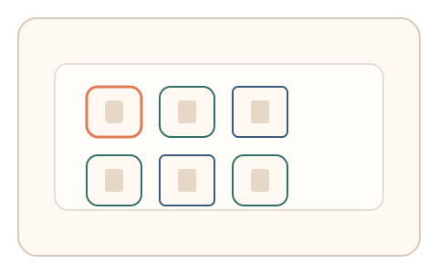
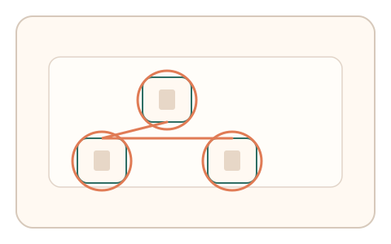
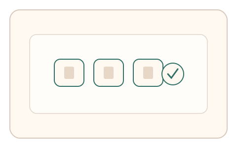

#77
视觉思考范式：文字与符号
已扩展
字形风格匹配
让用户从多种字形风格中选出同一字体系列的组合，以选择路径与回撤验证真实性。
概念原文
展示同一字母的不同字体风格，让用户快速选择“最像同一系列”的组合；记录选择路径与回撤。
把人类对字体家族一致性的直觉作为视觉特征。
研究背景
人类对字体家族一致性具有直觉判断，会依据笔画粗细、曲直与结构一致性进行匹配。选择路径与纠偏过程反映了自然的视觉分组策略。
核心机制
- 展示同一字母的多种字体风格样本。
- 用户选择“最像同一系列”的组合。
- 记录选择路径、停顿与回撤。
- 多轮随机字母与字体族建立稳定分布。
用户流程
- 步骤 1：用户看到多种字形风格卡片。
- 步骤 2：用户选择匹配的字体系列。
- 步骤 3：系统记录选择路径并判定。
判定信号
匹配组合一致性
人类对字体风格的分组具有稳定倾向。
回撤次数与停顿
真实选择常伴随短暂停顿与微调。
判定逻辑
匹配组合需落在人类一致性分布，且存在自然的停顿与回撤；过度快速或零回撤判异常。
对抗面
- 字体特征计算脚本直接聚类
- 重放真实用户的选择序列
防御与缓解
- 随机化字体样本与字母类型
- 加入细微渲染扰动降低特征计算
- 叠加指针轨迹与停顿信号进行多信号判定
可达性与风险
提供大字号与高对比模式，并允许键盘选择，必要时提供非文字替代任务。
- 字体渲染差异影响风格判断
- 不同文化背景对字体风格熟悉度不同
可视化状态

状态 1：风格样本
同一字母的多种字体风格。

状态 2：选择匹配
用户选择同一风格系列。

状态 3：一致判定
依据匹配一致性与路径判定。